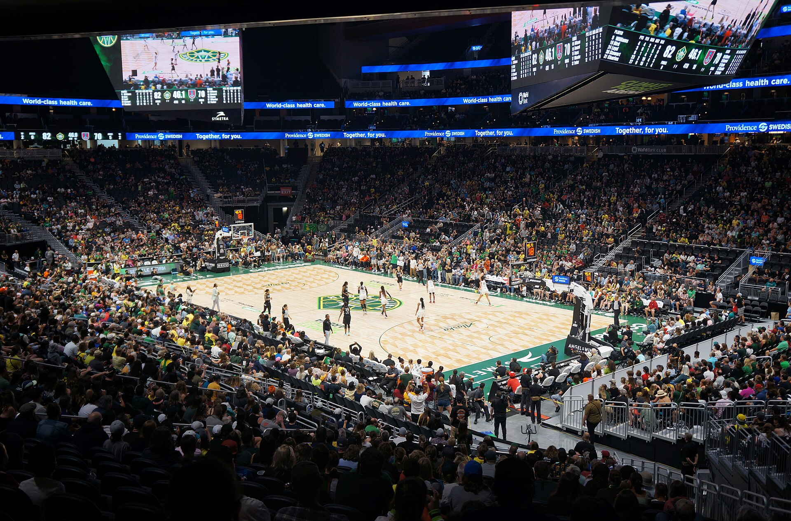

For most of its history, the WNBA's average crowd drifted slowly downward from its early peak — through relocations, folded franchises, and a pandemic. Then came 2024, and the sharpest attendance surge in a generation.
As submitted: “How does WNBA attendance compare between teams in smaller cities and teams in large metropolitan areas?” — including how the presence of other major professional sports teams affects visibility and fan support, and what attendance patterns tell us about which cities supported women’s basketball most strongly.
Attendance is the league's most visible measurement — a nightly count of who shows up. It reaches back to 1997, and it is anything but even.

For most of its history, the WNBA's average crowd drifted slowly downward from its early peak — through relocations, folded franchises, and a pandemic. Then came 2024, and the sharpest attendance surge in a generation.
What moved the curve? Part of the answer has a name. When Caitlin Clark joined the Indiana Fever, the team's home attendance did not grow — it multiplied.
One player moving one team's curve is remarkable; our question is bigger. Using team-by-team attendance since 1997, we will compare franchises in small markets with those in large metropolitan areas — and ask whether sharing a city with NBA, NFL, or MLB teams helps WNBA visibility or buries it beneath louder competition. The hypothesis cuts both ways: a big market means more potential fans, more media, and arenas built for spectacle, but it also means a crowded sports calendar where a WNBA team can become the fourth or fifth priority. A smaller market offers less competition for attention — and history suggests it can produce fiercer loyalty, the kind that keeps a franchise alive through losing seasons.
The attendance record is also a map of that loyalty — literally. Below is every city that has ever hosted a WNBA franchise, 1997 to 2026. Each circle is sized by the franchise's average home attendance; orange marks the living teams, gray the franchises that folded, and blue the ones that packed up and moved. Hover over any circle for its story.
The map already whispers answers to our question. The largest circles of 2025 sit in San Francisco, Indianapolis, and Brooklyn — two giant metros and one mid-sized city that out-drew them for a season. The gray ghosts cluster in the league's first decade: Miami, Portland, Cleveland, Charlotte, Houston, Sacramento — cities whose support, whatever its true depth, was not enough to survive the economics of the era. And one dot carries the whole project's irony: Portland, gray since 2002, turns orange again in 2026. Reading this map carefully also means respecting its limits — announced attendance is not always turnstile attendance, arena capacities differ, and a sold-out small building can “lose” on paper to a half-empty large one. Our analysis will normalize for capacity where the data allows.
Attendance is the league's most democratic statistic: it is the one number that ordinary people write themselves, night after night, simply by showing up. When we ask which cities filled their arenas, we are really asking where women's sports found its public — and when we ask why others stayed quiet, the answers (marketing budgets, media coverage, arena locations, competing teams) are decisions made by institutions, not failures of the game itself. The crowd count is data about the audience; read closely, it is also data about who was given a fair chance to become an audience.
Chart data is preliminary and will be verified against our cleaned dataset. Analysis and final visualizations by our team are in progress.